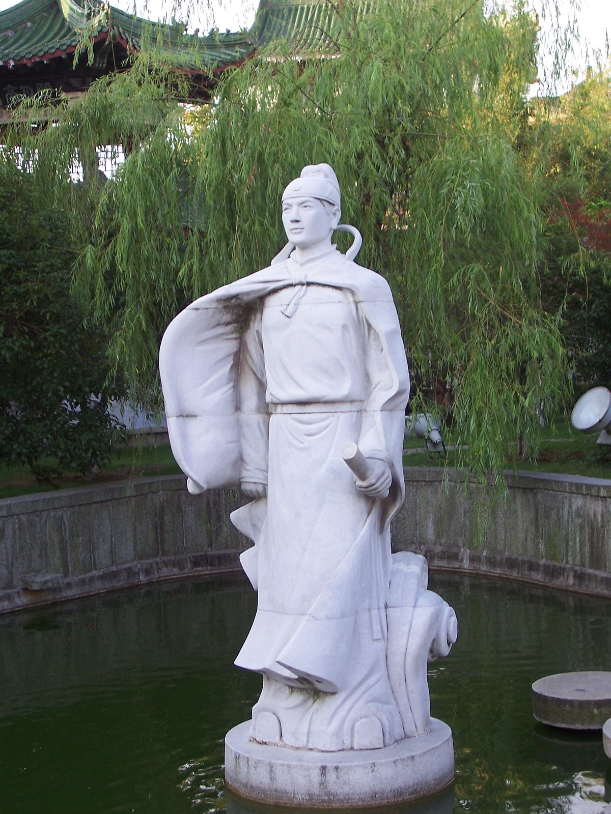

PIEŚŃ FILARETÓW
ADAM MICKIEWICZ
Hej, użyjmy żywota!
Wszak żyjem tylko raz
Niechaj ta czara złota
Nie próżno wabi nas.
Hejże do niej wesoło!
Niechaj obiega w koło,
Chwytaj i do dna chyl
Zwiastunkę słodkich chwil!
William Shakespeare
Sonet 9
О зів'яла троянда, передчасно зірвана,
Зірваний в бруньці і зів’яв навесні!
О яскрава перлино, похована в темряві!
О краса, обезголовлена гострою смертю!
Зелена слива, яку живить вітер
Зривали до того, як плоди впали з дерев.
Я без причини оплакував тебе;
З твого заповіту мені нічого не прийшло:
Але ти залишив мені більше, ніж я хотів
Бо я нічого від тебе не хотів:
О любий, я прошу твого вибачення
Ти дав мені невдоволення у спадок..
Wang Bo
Farewell To Vice-Prefect Du Setting Out For His Official Post In Shu

城阙辅三秦，
风烟望五津。
与君离别意，
同是宦游人。
海内存知己，
天涯若比邻。
无为在岐路，
儿女共沾巾